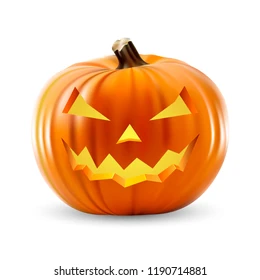

One theory holds that many Halloween traditions were
influenced by Celtic harvest festivals, particularly
the Gaelic festival Samhain, which are believed to
have pagan roots.

Growers of giant pumpkins often compete
to grow the most massive pumpkins. Festivals
may be dedicated to the pumpkin and these
competitions.
Native to North America, pumpkins are one of the oldest
domesticated plants, having been used as early as 7,000 to
5,500 BC. Pumpkins are widely grown for food, as well as
for aesthetic and recreational purposes.
All pumpkins are winter squash, mature fruit of
certain species in the genus Cucurbita.
Characteristics commonly used to define
"pumpkin" include smooth and slightly ribbed
skin, and deep yellow to orange color.
The thick shell contains the seeds and pulp.
The name is most commonly used for cultivars of
Cucurbita pepo, but some cultivars of Cucurbita
maxima, C. argyrosperma, and C. moschata with
similar appearance are also sometimes called "pumpkins".
Halloween or Hallowe'en, less commonly known as All halloween,
All Hallows' Eve, or All Saints' Eve, is a celebration observed
in many countries on 31 October, the eve of the Western Christian
feast of All Hallows' Day.